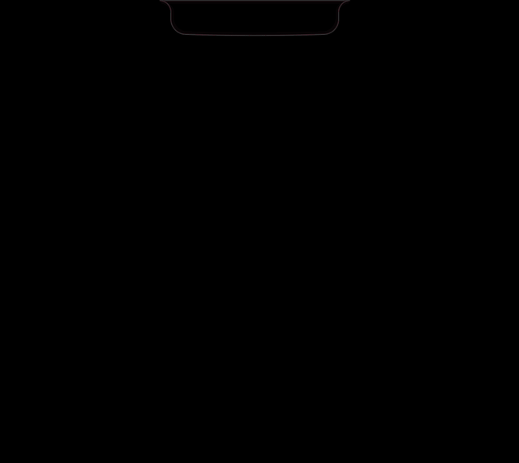

Moai
The dynamic island
your Mac was missing.
Talk to it or type at it. Calendar, focus, music, windows, files. The verbs run on this Mac, keyless, instant.

apple silicon · macos 14+ · free
- cancel my 3pm
- Calendar and reminders: made, moved, cancelled, undone. By voice.
- focus 25
- Pomodoro with brown noise, streaks, and a daily goal in the glance.
- left half
- Windows snap where you say. No chrome, no clicking.
- open figma
- Apps, folders, and shortcuts by name, spoken or typed.
- find parcel
- Notes, clips, files, your day: whatever landed on the island can be found on it.
- play some rain
- Any music player in one island, with soundscapes that live beside it.
- text amma: on my way
- Read back first, sent as an iMessage only when you say send.
- curl localhost:4242
- Anything on your Mac can raise a status pill: builds, deploys, agents. Loopback only.
First open
Homebrew works too: brew install --cask chetanjon/moai/moai.
macOS will ask once: System Settings, Privacy and Security, Open Anyway.
Moai is unsigned because it is free and independent. The
source is public,
speech recognition uses Apple standard dictation, and Moai itself only asks the
internet whether a newer version exists. The optional Chat tab is
a small built-in browser where you sign in to Claude, ChatGPT, or
Gemini with your own account; Moai is not affiliated with
Anthropic, OpenAI, or Google. Everything can be switched off.